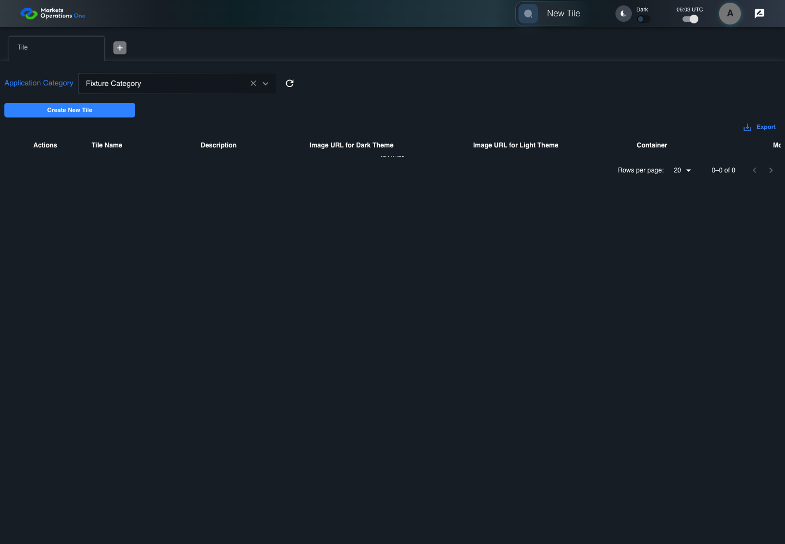
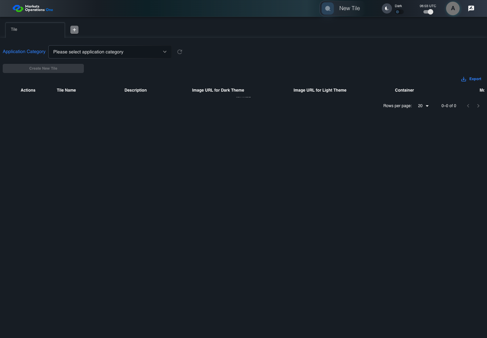

UI-RISK-006 administration source risk with live evidence
PASS · application/run-050/ui-risk-006-administration-source-risk-with-live-evidence-5bec670d0a50-attempt-1 · ACTUAL_APPLICATION_LOCAL_SERVICES
Actual React administration screens. Controlled browser credentials, role, records, and BFF responses. Save probes persist the received UI payload without replacing it with expected values. Declared clock emulation controls field timers. Proposed accessibility and source-risk expectations remain separate from business approval.
2026-10-22T06:02:58.986Z to 2026-10-22T06:03:04.750Z
Assertions and result · Artifact manifest · Exact run inputs and source hashes
Result SHA-256:b21b045cb6dadccfcce174db6ee1ef1c80533ce97f4798c6b845de675ed14f1fMachine observations
- controlled-response-81.json
0dcc7d2fc6d706a1d55e16479eecdafeba7d55debb5729227f90ba2d6894b540
Screenshot capture: CAPTURED. Named frames: 8.
Step screenshot bindings: COMPLETE. 7/7 canonical steps have execution screenshots.
Bindings measure structural coverage only. They do not establish screenshot content quality or relevance.
Screenshot content review: NOT_REVIEWED. Recorded context: 0/8 frames. Identical image bytes: 0 repeated frames. Recorded context does not establish human visual review.
Canonical step timeline
Given Admin A is authenticated as fixture UI-ADMIN-01 with the case-specific permissions
Execution: PASSED.1. step-01 Visible state after step 1: Given Admin A is authenticated as fixture UI-ADMIN-01 with the case-specific permissions
2026-10-22T06:03:01.865Z · 1440×1000
Step: /Users/lushevol/code/github/ratan-release-impact/workbench/tasks/ui-test-coverage-20261022/test-cases.md:10301
SHA-256:27d6bd720b7273dbdbe6e5e177f63bf71c3bf364f547bc4e60358e7a3a6e9877And Fixture Category request is pending
Execution: PASSED.
2. step-02 Visible state after step 2: And Fixture Category request is pending
2026-10-22T06:03:03.089Z · 1440×1000
Step: /Users/lushevol/code/github/ratan-release-impact/workbench/tasks/ui-test-coverage-20261022/test-cases.md:10302
SHA-256:5bcb500d711ad158118a3c7bd787c3396caf92816c948f9f53335b9acf5a3177When Admin A clicks icon button with source identity "UNVERIFIED category-clear target" inside the Application Category combobox inside the Tile administration tabpanel
Execution: PASSED.3. step-03 Visible state after step 3: When Admin A clicks icon button with source identity "UNVERIFIED category-clear target" inside the Application Category combobox inside the Tile administration tabpanel
2026-10-22T06:03:03.344Z · 1440×1000
Step: /Users/lushevol/code/github/ratan-release-impact/workbench/tasks/ui-test-coverage-20261022/test-cases.md:10303
SHA-256:021bd7c1d653436ff6a88ae792213370aa7a7bfcbb8954f6dc571e4f046e0479And the controlled BFF fixture resolves the pending Fixture Category tile response
Execution: PASSED.4. step-04 Visible state after step 4: And the controlled BFF fixture resolves the pending Fixture Category tile response
2026-10-22T06:03:03.427Z · 1440×1000
Step: /Users/lushevol/code/github/ratan-release-impact/workbench/tasks/ui-test-coverage-20261022/test-cases.md:10304
SHA-256:4e2866dfbd262c95d683ad7b1f1ebf1f701929a4ca6b04088fe1cc0e793adb81Then combobox named "Application Category" inside the "Tile" administration tabpanel has an empty value
Execution: PASSED.5. step-05 Visible state after step 5: Then combobox named "Application Category" inside the "Tile" administration tabpanel has an empty value
2026-10-22T06:03:03.541Z · 1440×1000
Step: /Users/lushevol/code/github/ratan-release-impact/workbench/tasks/ui-test-coverage-20261022/test-cases.md:10305
SHA-256:d87f8a747883e4e42a3def7706d3a59756728f1e39fdca4258fc0cb4832f3c3dAnd the data row count in data grid with source identity "administration records" inside the "Tile" administration tabpanel equals 0
Execution: PASSED.6. step-06 Visible state after step 6: And the data row count in data grid with source identity "administration records" inside the "Tile" administration tabpanel equals 0
2026-10-22T06:03:03.704Z · 1440×1000
Step: /Users/lushevol/code/github/ratan-release-impact/workbench/tasks/ui-test-coverage-20261022/test-cases.md:10306
SHA-256:272e80a95481f4a85599398eb50a4e083686ce593af3c95dd0cac1a84bceba1bAnd button named "Create New Tile" inside the "Tile" administration tabpanel is disabled
Execution: PASSED.7. step-07 Visible state after step 7: And button named "Create New Tile" inside the "Tile" administration tabpanel is disabled
2026-10-22T06:03:03.851Z · 1440×1000
Step: /Users/lushevol/code/github/ratan-release-impact/workbench/tasks/ui-test-coverage-20261022/test-cases.md:10307
SHA-256:fa1bd5ada33b10ad86d2b472abeec110f95a76a3baf0aa51887e14e2038d3dbb
Additional named frames

The final visible state after the named test assertions.
2026-10-22T06:03:04.159Z · 1440×1000Step: Test source: /Users/lushevol/code/github/ratan-release-impact/workbench/e2e/audit-specs/admin-ux.spec.ts:187
SHA-256:
aebdcac876f8773956d5e07e78fd0fa27414c49b85fbc8ce7a3683ab33ffa2e8Screenshots establish visible state only. Assertions and traces support functional claims.